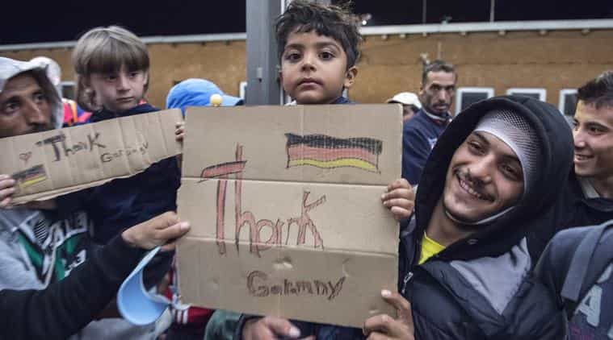

Kyle is an entrepreneur and nomad who has been living abroad since 2016. He blogs at This Is Trouble. Follow him on Facebook.


Recently, for the first time in my life, I made a man cry. It was a baffling and odd experience that happened in the basement of a bar, with an acquaintance I was comfortable spending time with. I want to tell this story because the story itself is telling. It shows how far Germany and other parts of Western Europe have fallen—how they are happy to be invaded, raped, and pillaged. It shows how brainwashed the people truly are.
I live in Eastern Europe, and generally speaking, I try to avoid any and all political talks with the locals. Many of them have grown up with far less than I have. This means that many of them automatically assume that I will preach down to them, by simple nature of being American. In addition, many of them also think they know much about the political scheme of the Western world than they do.
The combination of these two usually results in me wasting my breath. The reason for this is that when you add people’s general stubborn belief about politics, and add in the fact that some feel they have had it bad their whole life (and I don’t blame the ones who grew up post-Soviet Union fall), it’s clear they don’t want to listen to me simply because of where I come from.
And that’s fine and all—I just don’t talk about it. The problems start when people become insistent on talking about it. You’d be amazed how many people will simply not let you out of a conversation about Donald Trump.
Back to the story. A few months ago, I met this German fella at a language exchange. He was cool, and we swapped numbers. A week or so later him, another girl we’d met, my girlfriend, and I all met for some beers.

The conversation went political at one point, and I tried to bow out of it gracefully. I already knew that he was fully plugged in to the “Angela Merkel is great, all refugees should be given a chance, we are all one world” matrix. I kept trying to change the topic, and he just wouldn’t. It kept going back to Trump and how horrible he was. He wouldn’t take no for an answer.
Finally, I engaged. I laid out everything, and three or so odd minutes later he was literally in tears at the bar. While that was bad enough, it was what he told me next that truly shocked me. He said:
I am ashamed of being German. Many of my friends feel the same. Since World War II, we feel like we must accept everybody for who they are. We may never say bad things, because we did horrible things. This is why we MUST allow all refugees in, and whoever else needs help. They deserve a chance at life.
This post also goes into great depth about it:
People here have been brainwashed with a guilt complex since World War 2 ….. guilt, guilt, guilt is written all over them. In schools the smaller children have to watch the concentration camp victim videos and are already traumatized at a young age. That is why so many hold their tongue when it comes to saying anything against foreigners. Apart from that it is against the law to say anything against certain racial groups and you can go to jail because of it. This is reality pure even though many of the Germans remain oblivious of this.
Never mind the fact that he’s making barely $1,000 a month working for a German company in Eastern Europe. This does not come from a position of having too much and being generous. Never mind the fact that Germany economically, and culturally, cannot handle it’s overflow of refugees (they let unskilled, young men in instead of importing hot girls). None of that mattered. In some ways, I almost admired him. He seemingly doesn’t have a selfish bone in his body (unlike me).
I was raised in California, where we welcome everybody. I take heat from family all the time, because I fully support building the wall. But this young German man opened my eyes greatly.
It comes down to people feeling they must be unselfish. Am I really a bad person because I want the wall built, so that I can stop paying hundreds of thousands of dollars in taxes (speaking in terms of over my lifetime) funding education and healthcare for illegal immigrants?
Is it so bad if a German wants him or her self and their offspring to be able to live in a safe society, without the real risks that come in by taking on insane amounts of political refugees? Why is it so bad to look out for your own kin?
These were the questions that I was left scratching my head over, because they make no sense to me. Humans are, and always have been, inherently selfish. We always have our own best interests at heart, but sometimes it’s subconsciously. In the case of this German fella, his selfishness comes from societal shame. Society shames him if he is anything but selfless, so selfishly he preaches for acceptance so that he can feel good—despite what he truly thinks, deep down.
I suspect this is what brought him to tears. Perhaps at his deepest core, he believes and knows he is preaching for a movement he doesn’t fully believe in. Perhaps he does believe his homeland will fall at some point. Maybe he is a bit ashamed of what he has become.

I realize that if you want to truly live in today’s world, it usually means pissing a lot of people off. The confidence to do that comes from living in such a place of despair that anything is better. I’ve been at that point before, too. I had nothing to live for—I couldn’t get girls, felt like I was going nowhere in life, and more. Now, I care far less who I offend because I have been in darker places.
Unfortunately, many German men are being raised in a dark place. They are afraid, and unable, to speak out. They fear the consequences of their action. They feel that no girls will want them if they do speak out—but hell, they already seem to prefer the refugees. It is not until these men find themselves in truly dark places that they will derive the confidence to selfishly state what they really think.
Little do these German men know that their own women would have far more respect for them if they actually did stand up for what they believed in, no matter the consequences. This recent conversation with one German guy showed real insight into how many of them currently think. Unfortunately, that thought process will not get them individually, or their country as a whole, into a safer space—no pun intended.
Want to go on meet more girls and have more sex? Check out my book, Cracking OkCupid. For more posts about life in Eastern Europe, check out EasternEuropeanTravel.com.
Read More: How British Men Are Ruining Eastern Europe